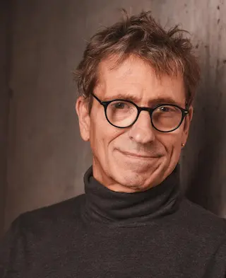

<!doctype html>
<html lang="de">
<head>
  <meta charset="utf-8" />
  <meta name="viewport" content="width=device-width,initial-scale=1" />
  <title>Über mich – Ove Krüger | Sucht sucht Sinn</title>
  <meta name="description" content="Über mich – Ove Krüger. Life Trust Coach, Mentor & Trainer. Meine Geschichte, Rolle und Erkenntnisse." />

  <!-- Google Fonts -->
  <link href="https://fonts.googleapis.com/css2?family=Montserrat:wght@400;600;700&display=swap" rel="stylesheet">

  <!-- Haupt-CSS -->
  <link rel="stylesheet" href="style.css?v=9">
</head>
  <footer class="site-footer">
  <p>
    <a href="impressum.html">Impressum</a> | 
    <a href="datenschutz.html">Datenschutz</a>
  </p>
<footer class="site-footer">
  <p>
    <a href="impressum.html">Impressum</a> | 
    <a href="datenschutz.html">Datenschutz</a>
  </p>
</footer>
<body class="ueber-mich">
  

<!-- NAV -->
<header class="site-header">
  <div class="nav-container">
    <a class="brand" href="index.html">Sinnwärts</a>
    <nav aria-label="Hauptnavigation">
      <ul class="nav-list">
        <li><a href="index.html">Start</a></li>
        <li><a href="ueber-mich.html" class="active">Über mich</a></li>
        <li><a href="suechte.html">Süchte</a></li>
        <li><a href="nora.html">Meine KI</a></li>
        <li><a href="angebot.html">Angebote</a></li>
        <li><a href="kontakt.html">Kontakt</a></li>
      </ul>
    </nav>
  </div>
</header>
<!-- HERO -->
<section class="hero hero--L hero--soft hero--low" style="--overlay:.25; --pos-y:20%; --inner-bottom:28%;">
  
  <div class="inner">
    <h1>Über mich</h1>
    <p class="sub">Mein Weg, meine Haltung, meine Geschichte.</p>
  </div>
</section>

<!-- CONTENT WRAP -->
<section class="about wrap">


  <!-- Meine Geschichte -->
  <section class="about-block" id="geschichte">
    <div class="text">
      <h2>Meine Geschichte</h2>

      <h3><span class="icon">🌱</span> Kindheit & Überforderung</h3>
      <p><strong>Ich wuchs wohlbehütet auf – und fühlte mich doch ständig überfordert.</strong></p>
      <p>Geboren in Hamburg. Eigentlich wollte ich Lehrer werden – Musik, Sport und Pädagogik waren mein Weg. Doch das Leben bremste mich hart aus. Meine Kindheit war wohlbehütet und doch geprägt vom „Drama des begabten Kindes“ (Alice Miller). Ich habe mich ständig überfordert, immer der Möhre am Stöckchen hinterher. Der Preis war hoch: Flucht aus der Realität, Alkohol als Betäubung.</p>

      <h3><span class="icon">⚡</span> Absturz & Abgrund</h3>
      <p><strong>Ich habe die Kante des Abgrundes gesehen – und loslassen müssen.</strong></p>
      <p>Es folgten Unfälle, Depressionen, zwanzig Jahre exzessiver Alkoholmissbrauch. Dieses Aufgeben hat Türen geöffnet, die ich niemals gesucht hätte. Viele Therapien, Lehrer und Erfahrungen haben mir einen Koffer voller Werkzeuge gegeben, die ich heute nutze – für mich und für andere.</p>

      <h3><span class="icon">🔥</span> Wende & neue Stärke</h3>
      <p><strong>Krisen haben mir gezeigt, dass aus Dunkelheit neue Stärke wächst.</strong></p>
      <p>Seit über 13 Jahren bin ich zufrieden trocken. Meine körperlichen Einschränkungen – 70 % Schwerbehinderung – haben mir paradoxerweise neue Fähigkeiten gezeigt. Ich weiß heute: Krisen sind nicht das Ende, sondern oft der Beginn von etwas Neuem. Meine Geschichte ist kein Makel, sondern mein Fundament. Alles, was ich lehre, habe ich selbst durchlebt, geprüft und in mein Leben integriert.</p>

      <h3><span class="icon">✨</span> Heute & Vision</h3>
      <p><strong>Veränderung beginnt immer im Jetzt – auch wenn es weh tut.</strong></p>
      <p>Ich weiß, wie es ist, wenn nichts mehr geht. Ich weiß, wie einsam es sich anfühlen kann, wenn man nicht mehr weiterweiß. Und ich weiß, dass es möglich ist, aus genau diesen Momenten neue Kraft zu schöpfen. Meine wichtigste Erfahrung lautet: <em>„Ja“ zum Jetzt sagen – auch wenn es schmerzhaft ist.</em></p>

      <p>Dankbar blicke ich zurück: nicht als Opfer, sondern als jemand, der verstanden hat, dass Veränderung nur im Augenblick beginnt. Und genau hier liegt meine Vision: Menschen dabei zu begleiten, Blockaden zu lösen, Klarheit zu finden und ihr Leben in Tiefe zu verwandeln.</p>
    </div>
  </section>

<!-- Das bin ich -->
<section class="about-block" id="portrait">
  <div class="zz-row">
    <div class="zz-media">
      
    </div>
    <div class="zz-text">
      <h2>Das bin ich</h2>
      <p>Heute begegne ich Menschen echt, klar und zugewandt.</p>
      <p>Nicht Theorien oder fertige Konzepte tragen mich, sondern gelebte Erfahrung.</p>
      <p>Ich bringe systemische Klarheit, integrales Denken und meine Expertise in Sucht- und Lebensberatung mit – verbunden mit Menschlichkeit und Erdung.</p>
    </div>
  </div>
</section>

<!-- Meine Erkenntnisse -->
<section class="about-block" id="erkenntnisse">
  <div class="zz-row">
    <div class="zz-text">
      <h2>Meine Erkenntnisse</h2>
      <p>Ich sage „Ja“ zum jetzigen Augenblick – auch wenn er schmerzhaft erscheint.</p>
      <p>Meine Erkenntnis ist: Es gibt keinen Shortcut. Jeder Moment trägt die Chance für Veränderung. 
      Heute weiß ich: Jeder Tag ist neu – und ich bin dankbar dafür.</p>
    </div>
    <div class="zz-media">
      
    </div>
  </div>
</section>

</section>

<!-- FOOTER -->
<footer class="site-footer">
  <div class="wrap">© <span id="y"></span> Ove Krüger · Sucht sucht Sinn</div>
</footer>
<script>document.getElementById('y').textContent=new Date().getFullYear();</script>

</body>
</html>
